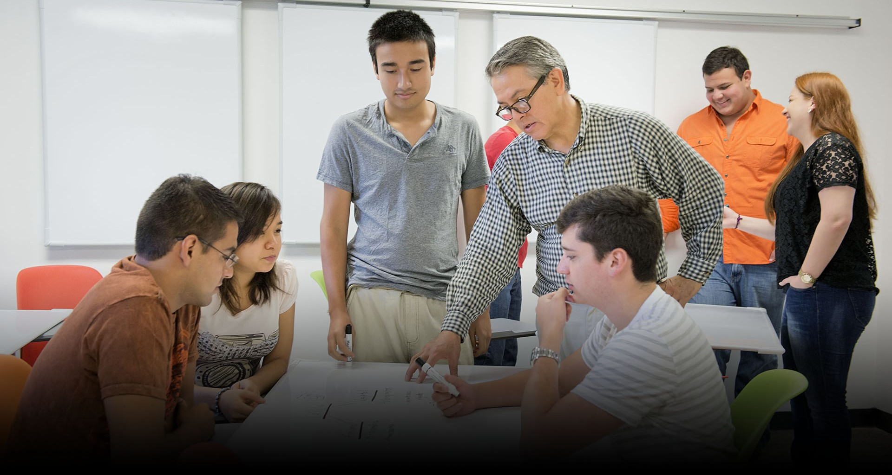

SOLUCIONES

Cabe destacar también que hacer para entregar y hacer para aprender es diferente. Distintos contenidos implican distintas maneras de aprenderlos. Se pueden distinguir dos rutas: la de producir o la de aprender significativamente. También es importante notar que hacer para dar y hacer para aprender son diferentes. Diferentes contenidos implican diferentes formas de aprender. Se pueden distinguir dos vías: una para la producción u otra para el aprendizaje sustancial. El primero no busca nada más que hacer algo como prueba de que se ha invertido tiempo en tener un producto que se puede ver y apreciar. Mientras que la segunda parte busca que los estudiantes se apropien de nuevos conocimientos a través de un ancla con información ya existente. Si bien es normal que aprendamos en el aula apoyados en materiales, esto no quiere decir que estos sean la única fuente de conocimiento, más si tenemos en cuenta que la enseñanza ya no es la normal, centrándonos solo en el contenido, solo en el docente. o solo. en los estudiantes, pero en una perspectiva holística. Así que, Hay que recordar que no es lo mismo cantidad que calidad. Un volumen alto de actividades no significa un aprendizaje auténtico y significativo de los estudiantes. Las estrategias didácticas deben orientarse a procesar la información privilegiada que permanece en el estudiante como conocimiento propio de su vida.
El docente debe realizar una aproximación al contexto inmediato actual, ser consciente de que el proceso educativo en el aula –presencial o virtual– no depende exclusivamente de él, tener claro cuál es la finalidad formativa y cuestionarse cuáles son los medios que le ayudarán a alcanzarla.
Por su parte, es ineludible reconocer que los alumnos necesitan un sentido educativo de las tecnologías. El alumno de estos tiempos es percibido como un individuo que requiere información clara y concisa en paquetes pequeños que no le demanden más de unos minutos de su atención; de lo contrario, se corre el riesgo de que encuentre poco atractivo el material de estudio y lo abandone. Sin embargo, y aunque se debe tomar en cuenta el perfil del alumno, no se puede poner una regla general para la elaboración de recursos educativos que pertenecen a distintas disciplinas y que sirven a diferentes tipos de conocimiento y de objetivos. Aunado a esto se debe tener en cuenta que el aprendizaje en nuestros tiempos está enfocado al cambio, la renovación, la reestructuración y la reformulación de problemas.
Índice